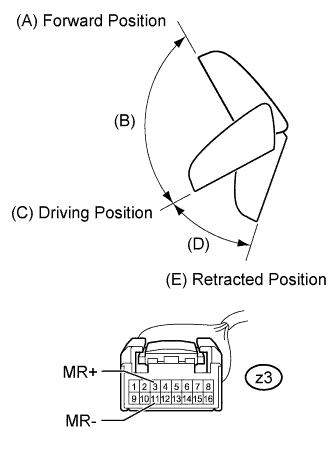
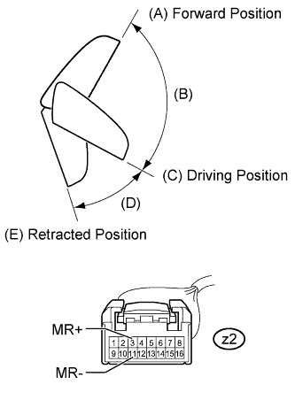
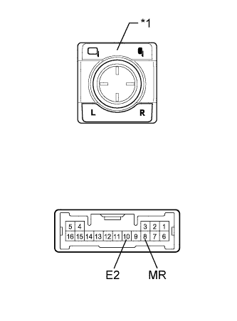

POWER MIRROR CONTROL SYSTEM > Power Retractable Mirrors do not Operate with Power Retract Mirror Switch |
| 1.CHECK CAN COMMUNICATION SYSTEM |
Check if a CAN communication DTC is output (Click here).
| Result | Proceed to |
| DTC is not output | A |
| DTC is output | B |
|
| ||||
| A | |
| 2.READ VALUE USING INTELLIGENT TESTER (OUTER MIRROR RETRACT SWITCH) |
Using the intelligent tester, read the Data List (Click here).
| Tester Display | Measurement Item/Range | Normal Condition | Diagnostic Note |
| Outer Mirror Fold SW | Mirror retract switch signal / ON or OFF | ON: Retract switch in retract position OFF: Retract switch in driving position | - |
|
| ||||
| OK | |
| 3.PERFORM ACTIVE TEST USING INTELLIGENT TESTER (MIRROR RETRACT FUNCTION) |
Select the Active Test, use the intelligent tester to generate a control command, and then check the mirror retract function (Click here).
| Tester Display | Test Part | Control Range | Diagnostic Note |
| Mirror Fold/Return | Mirror retract operation | Fold / Return | - |
| Result | Proceed to |
| Outer rear view mirror LH does not operate normally | A |
| Outer rear view mirror LH operates normally | B |
| Outer rear view mirror RH does not operate normally | C |
| Outer rear view mirror RH operates normally | D |
|
| ||||
|
| ||||
|
| ||||
| A | |
| 4.INSPECT OUTER REAR VIEW MIRROR ASSEMBLY LH |
|  |
Remove the outer rear view mirror assembly LH (Click here).
When checking each mirror position, set the mirror position by hand. Apply battery voltage and check the mirror movement.
| Measurement Condition | Mirror Position | Specified Condition |
| Battery positive (+) → Terminal z3-3 (MR+) Battery negative (-) → Terminal z3-11 (MR-) | Forward position (A) | Moves from (A) to retracted position (E) |
| Battery negative (-) → Terminal z3-3 (MR+) Battery positive (+) → Terminal z3-11 (MR-) | Forward position (A) | Does not move |
| Battery positive (+) → Terminal z3-3 (MR+) Battery negative (-) → Terminal z3-11 (MR-) | Between forward position (A) and driving position (C) | Moves from (B) to retracted position (E) |
| Battery negative (-) → Terminal z3-3 (MR+) Battery positive (+) → Terminal z3-11 (MR-) | Between forward position (A) and driving position (C) | Moves from (B) to forward position (A) |
| Battery positive (+) → Terminal z3-3 (MR+) Battery negative (-) → Terminal z3-11 (MR-) | Driving position (C) | Moves from (C) to retracted position (E) |
| Battery negative (-) → Terminal z3-3 (MR+) Battery positive (+) → Terminal z3-11 (MR-) | Driving position (C) | Does not move |
| Battery positive (+) → Terminal z3-3 (MR+) Battery negative (-) → Terminal z3-11 (MR-) | Between driving position (C) and retracted position (E) | Moves from (D) to retracted position (E) |
| Battery negative (-) → Terminal z3-3 (MR+) Battery positive (+) → Terminal z3-11 (MR-) | Between driving position (C) and retracted position (E) | Moves from (D) to driving position (C) |
| Battery positive (+) → Terminal z3-3 (MR+) Battery negative (-) → Terminal z3-11 (MR-) | Retracted position (E) | Does not move |
| Battery negative (-) → Terminal z3-3 (MR+) Battery positive (+) → Terminal z3-11 (MR-) | Retracted position (E) | Moves from (E) to driving position (C) |
|
| ||||
| OK | ||
| ||
| 5.INSPECT OUTER REAR VIEW MIRROR ASSEMBLY RH |
|  |
Remove the outer rear view mirror assembly RH (Click here).
When checking each mirror position, set the mirror position by hand. Apply battery voltage and check the mirror movement.
| Measurement Condition | Mirror Position | Specified Condition |
| Battery positive (+) → Terminal z2-3 (MR+) Battery negative (-) → Terminal z2-11 (MR-) | Forward position (A) | Moves from (A) to retracted position (E) |
| Battery negative (-) → Terminal z2-3 (MR+) Battery positive (+) → Terminal z2-11 (MR-) | Forward position (A) | Does not move |
| Battery positive (+) → Terminal z2-3 (MR+) Battery negative (-) → Terminal z2-11 (MR-) | Between forward position (A) and driving position (C) | Moves from (B) to retracted position (E) |
| Battery negative (-) → Terminal z2-3 (MR+) Battery positive (+) → Terminal z2-11 (MR-) | Between forward position (A) and driving position (C) | Moves from (B) to forward position (A) |
| Battery positive (+) → Terminal z2-3 (MR+) Battery negative (-) → Terminal z2-11 (MR-) | Driving position (C) | Moves from (C) to retracted position (E) |
| Battery negative (-) → Terminal z2-3 (MR+) Battery positive (+) → Terminal z2-11 (MR-) | Driving position (C) | Does not move |
| Battery positive (+) → Terminal z2-3 (MR+) Battery negative (-) → Terminal z2-11 (MR-) | Between driving position (C) and retracted position (E) | Moves from (D) to retracted position (E) |
| Battery negative (-) → Terminal z2-3 (MR+) Battery positive (+) → Terminal z2-11 (MR-) | Between driving position (C) and retracted position (E) | Moves from (D) to driving position (C) |
| Battery positive (+) → Terminal z2-3 (MR+) Battery negative (-) → Terminal z2-11 (MR-) | Retracted position (E) | Does not move |
| Battery negative (-) → Terminal z2-3 (MR+) Battery positive (+) → Terminal z2-11 (MR-) | Retracted position (E) | Moves from (E) to driving position (C) |
|
| ||||
| OK | ||
| ||
| 6.INSPECT OUTER MIRROR SWITCH ASSEMBLY |
|  |
Remove the outer mirror switch assembly (Click here).
Measure the resistance according to the value(s) in the table below.
| Tester Connection | Switch Condition | Specified Condition |
| 8 (MR) - 10 (E2) | Retract switch in retract position | Below 10 Ω |
| Retract switch in driving position | 10 kΩ or higher |
| *1 | Mirror Retract Switch |
|
| ||||
| OK | |
| 7.CHECK HARNESS AND CONNECTOR (MAIN BODY ECU - OUTER MIRROR SWITCH) |
Disconnect the G46 ECU connector.
Disconnect the G6 switch connector.
Measure the resistance according to the value(s) in the table below.
| Tester Connection | Condition | Specified Condition |
| G46-28 (RET) - G6-8 (MR) | Always | Below 1 Ω |
| G6-10 (E2) - Body ground | Always | Below 1 Ω |
| G46-28 (RET) - Body ground | Always | 10 kΩ or higher |
|
| ||||
| OK | ||
| ||